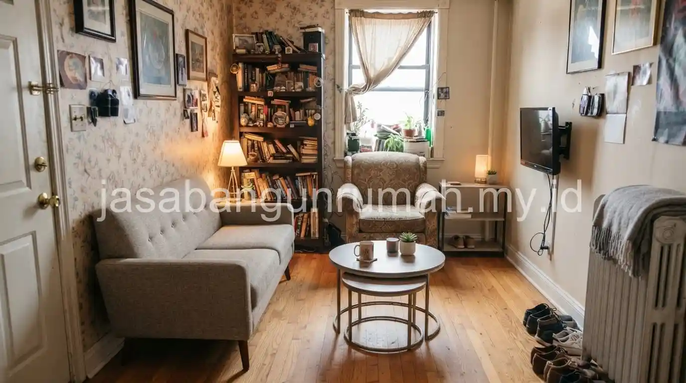

Daftar Isi
- Mengganti Cat Dinding untuk Transformasi Cepat dan Terjangkau
- Menata Ulang Pencahayaan tanpa Mengubah Struktur
- Melakukan Re-layout Furnitur untuk Kesan Ruangan Baru
- Memperbarui Aksesoris dan Elemen Dekoratif Kecil
- Melakukan Renovasi Bertahap Sesuai Prioritas dan Anggaran
- Memaksimalkan Pencahayaan Alami untuk Kesan Luas
- Memilih Material Lokal yang Terjangkau namun Berkualitas
Renovasi rumah hemat biaya dapat dilakukan dengan memprioritaskan perubahan yang berdampak besar namun berbiaya rendah, seperti mengganti cat, menata ulang pencahayaan, dan re-layout furnitur, sebelum mempertimbangkan perubahan struktural yang lebih mahal.
Mengganti Cat Dinding untuk Transformasi Cepat dan Terjangkau
Mengganti cat dinding menjadi salah satu cara paling efektif mengubah suasana rumah dengan biaya relatif rendah dibandingkan pekerjaan renovasi lainnya, terutama jika dilakukan pada ruangan yang paling sering dipakai.
Pemilihan warna cat yang lebih terang dapat membantu ruangan terlihat lebih luas dan segar, sementara aksen warna pada satu sisi dinding tertentu dapat memberi karakter baru tanpa perlu mengecat seluruh ruangan.
Sebelum mengecat ulang, memastikan permukaan dinding bebas dari retak atau kelembapan tetap penting agar hasil akhir lebih tahan lama dan tidak cepat mengelupas.
Menata Ulang Pencahayaan tanpa Mengubah Struktur
Menata ulang pencahayaan, baik dengan mengganti jenis lampu maupun menambah titik lampu tambahan pada area tertentu, dapat mengubah suasana ruangan secara signifikan tanpa membutuhkan biaya sebesar pekerjaan struktural.
Penggantian lampu neon konvensional dengan lampu LED hangat pada ruang keluarga misalnya, dapat memberi kesan lebih nyaman dan modern dengan biaya yang relatif terjangkau.
Penambahan lampu sorot kecil pada area tertentu seperti rak buku atau galeri foto juga dapat menciptakan titik fokus visual baru tanpa perlu renovasi besar pada ruangan tersebut.
Melakukan Re-layout Furnitur untuk Kesan Ruangan Baru
Menata ulang posisi furnitur yang sudah ada, tanpa membeli furnitur baru, dapat memberi kesan ruangan yang berbeda dan lebih fungsional dengan biaya yang sangat minim dibandingkan renovasi lainnya.
Mengubah orientasi sofa, memindahkan meja kerja ke sudut yang lebih mendapat cahaya alami, atau menggeser lemari untuk membuka jalur sirkulasi baru dapat memberi kesan ruangan lebih lapang tanpa satu pun perubahan fisik pada bangunan.
Strategi ini cocok diterapkan terlebih dahulu sebelum memutuskan untuk membeli furnitur baru atau melakukan renovasi struktural yang lebih mahal.

Memperbarui Aksesoris dan Elemen Dekoratif Kecil
Mengganti aksesoris seperti gorden, bantal sofa, taplak meja, atau menambahkan tanaman hias dapat memberi kesegaran visual pada ruangan dengan biaya yang jauh lebih rendah dibandingkan mengganti furnitur utama.
Elemen dekoratif kecil ini sering diabaikan padahal cukup efektif memberi kesan ruangan yang lebih terawat dan up to date, terutama jika dipadukan dengan strategi penggantian cat dan penataan ulang pencahayaan yang sudah dilakukan sebelumnya.
Kombinasi beberapa strategi hemat biaya ini seringkali memberi dampak visual yang setara dengan renovasi besar, namun dengan pengeluaran yang jauh lebih terkendali.
Melakukan Renovasi Bertahap Sesuai Prioritas dan Anggaran
Renovasi bertahap memungkinkan pemilik rumah memprioritaskan area yang paling mendesak terlebih dahulu, seperti perbaikan atap bocor atau dinding retak, sebelum melanjutkan ke renovasi estetika seperti pengecatan atau penggantian lantai pada tahap berikutnya.
Strategi ini membantu mengendalikan pengeluaran karena anggaran dapat disesuaikan dengan kondisi keuangan pada setiap tahap, tanpa harus mengeluarkan dana besar sekaligus untuk seluruh area rumah.
Perencanaan tahapan renovasi sebaiknya tetap disusun secara menyeluruh sejak awal, meski pengerjaannya dilakukan bertahap, agar hasil akhir tetap konsisten dan tidak terlihat tambal sulam.
Memaksimalkan Pencahayaan Alami untuk Kesan Luas
Memanfaatkan cahaya alami secara optimal merupakan salah satu strategi renovasi rumah hemat biaya yang sering diabaikan, padahal dampaknya terhadap kenyamanan dan kesan luas ruangan cukup signifikan.
Mengganti tirai tebal dengan tirai tipis berbahan sheer, membersihkan kaca jendela secara rutin, atau menambahkan cermin di posisi strategis dapat memantulkan cahaya alami ke sudut ruangan yang sebelumnya terasa gelap tanpa biaya renovasi struktural.
Jika memungkinkan, menambahkan skylight kecil atau ventilasi kaca pada area tertentu juga dapat menjadi investasi jangka panjang yang meningkatkan kualitas udara dan pencahayaan alami secara bersamaan.
Memilih Material Lokal yang Terjangkau namun Berkualitas
Pemilihan material lokal yang tepat dapat menekan biaya renovasi secara signifikan tanpa mengorbankan kualitas hasil akhir, terutama untuk elemen seperti lantai, dinding, atau plafon yang membutuhkan material dalam jumlah besar.
Material lokal seperti keramik produksi dalam negeri, batu alam lokal, atau kayu olahan regional umumnya memiliki harga lebih terjangkau dibandingkan material impor dengan fungsi yang setara untuk kebutuhan renovasi rumah tinggal standar.
Bagi pemilik rumah yang ingin merencanakan renovasi hemat biaya secara lebih terstruktur, dapat berkonsultasi melalui layanan renovasi rumah untuk menyusun prioritas renovasi sesuai anggaran yang tersedia.